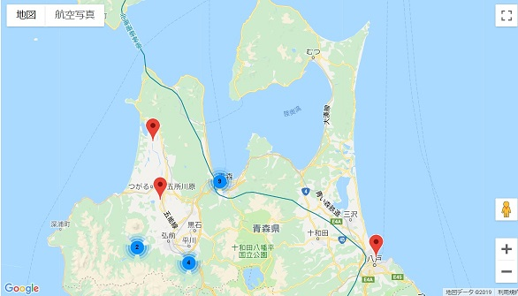

| 日付 | 調査者 | 調査名 |
|---|---|---|
| 2019年07月31日 | 富山県 | 吉田川調査 |
| 2019年07月30日 | 富山県 | 西派川調査 |
| 2017年07月22日 | (一社)黒部川扇状地研究所 | 黒部川調査 |
| 2017年02月17日 | 環の会 | 千保川(3ヵ所) |
| 2018年05月15日 | 北谷 優典 | 平成29年度岩木川調査 |
| 2017年08月01日 | 青森県青森市 青太郎 | 平成29年度 第1回 新城川（上流、中流、下流）調査 |
| 2016年08月25日 | 矢野 篤男 | ２０１６年梅田川調査（全８カ所） |
| 2017年08月01日 | 青森 太郎 | 虹貝川 調査サンプル |
| 2100年08月01日 | 青森県青森市 青太郎 | 令和？年度 馬淵川調査 |
| 2017年08月01日 | 青森県青森市 青太郎 | 平成29年度 第1回 新城川（上流、中流、下流）調査 |
| 2017年08月01日 | 青森県青森市 青太郎 | 平成29年度 第1回 新城川（上流、中流、下流）調査 |
| 2017年08月01日 | 青森県青森市 青太郎 | 平成29年度 第1回 新城川（上流、中流、下流）調査 |
| 2017年08月01日 | 青森県青森市 青太郎 | 平成29年度 第1回 新城川（上流、中流、下流）調査 |
| 2017年08月01日 | 青森県青森市 青太郎 | 平成29年度 第1回 新城川（上流、中流、下流）調査 |
| 2020年05月01日 | 鶴田 鶴太郎 | 令和2年度 第23回 岩木川（上流、中流２ヵ所、下流）調査 |
| 2017年08月01日 | 青森県青森市 青太郎 | 平成29年度 第1回 新城川（上流、中流、下流）調査 |
| 2030年06月27日 | 青森市 青太郎 | 令和12年度 新城川調査 |
| 2020年09月06日 | 青森 太郎 | 新城川 調査３ヵ所 |